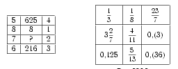

Problem ID 88218
Having understood the principles by which the numbers are depicted in the tables $($shown in the figures below$)$, insert the missing number into the first table, and remove the extra number from the second table.

Solution
In the first table, on each line in the first column we have the basis of the degree, in the third column we have the exponent and in the second the result of the exponentiation. Thus, the missing number is 49.
The second table is constructed differently: there are pairs of equal numbers but one number is written in the form of a decimal fraction, and the other in the form of an ordinary fraction. Thus, the extra number is 5/13.
Answer
49; 5/13.